Rainbow Matrix AI
Manual do Operador de Elite.
🌈 MTF Probability Engine · 💎 Elite Access
O motor de análise multi-timeframe mais avançado disponível no mercado para o operador privado.
Filosofia: O Despertar do Operador Institucional
A partir das mesmas noites sem dormir. A partir das mesmas entradas mal cronometradas. Este sistema foi forjado com a exata mesma dor que você provavelmente está sentindo agora mesmo.
Existe uma estatística que ninguém lhe conta quando você começa: 95% das pessoas que se aventuram neste mercado perdem dinheiro. Não é azar. Não é falta de inteligência. É um sistema projetado exatamente para fazer isso. Somos sardinhas em um oceano cheio de tubarões e baleias. Nosso dinheiro não desaparece — ele é transferido.
Com o tempo, o entendimento de algo muito maior do que gráficos e indicadores torna-se claro. O mercado financeiro não são apenas números — é um teatro. As baleias institucionais sabem exatamente onde os stops do varejo estão posicionados. Elas constroem armadilhas. Elas criam movimentos falsos para acionar saídas antes de ir na direção que você previu.
Com mais de dois anos e meio de desenvolvimento intensivo, centenas de horas de testes em mercados ao vivo e a colaboração dos melhores agentes de IA disponíveis, os principais indicadores de mercado foram extraídos, aplicados simultaneamente em 5 timeframes distintos e configuráveis, e através de algoritmos matemáticos baseados em Fibonacci, estatística log-normal e física gravitacional institucional, todos os 50 parâmetros foram transformados em um único número: o Global Probability Score.
Enquanto os robôs de trading comuns reagem ao mercado, o Rainbow Matrix AI o antecipa. Enquanto os traders de varejo veem apenas uma tela, você vê cinco dimensões temporais fundidas em um único sinal de probabilidade.
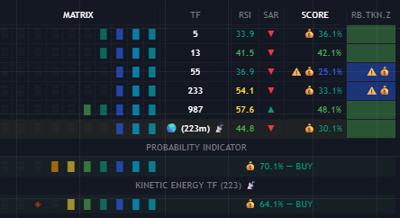
Robôs genéricos operam com parâmetros fixos, rigidamente codificados para condições de mercado específicas. Quando o regime de volatilidade muda — ou quando ocorre um evento "Black Swan" (Cisne Negro) — o robô, incapaz de se adaptar estruturalmente, muitas vezes zera a conta do usuário em questão de horas.
O Rainbow Matrix AI foi forjado a partir de anos de pesquisa e engenharia reversa do comportamento institucional. Nós não construímos um robô para operar por você; nós construímos um exoesqueleto analítico para o seu cérebro.
- Robôs (Bots): Reagem ao mercado com parâmetros fixos e rígidos, cegos ao contexto.
- Rainbow Matrix AI: Antecipa o mercado através de um HUD de probabilidade matemática em tempo real com visão de raio-x.
- Resultado: O humano retém o controle absoluto. Você não é mais a presa. Você é o predador.
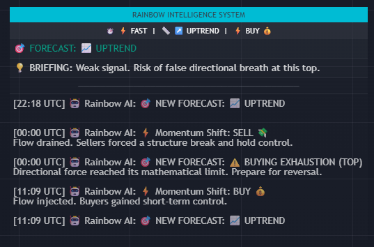
O Rainbow Matrix AI não é um indicador comum — é um motor de cálculo quantitativo construído sobre três pilares matemáticos fundamentais:
- Sequência de Fibonacci: Define os parâmetros temporais e os pesos dos timeframes. O mercado institucional é construído sobre esta sequência — compreendê-la é falar a língua dos Big Players.
- Distribuição Log-Normal: Ao contrário das Bandas de Bollinger convencionais (distribuição linear), as zonas de exaustão são calculadas usando logaritmos naturais — capturando a realidade geométrica e assimétrica dos movimentos de preço.
- Volatilidade Quantum HFT (GK + EWMA): Funde Garman-Klass (capturando a violência intra-candle de pavios e stop-hunts) com RiskMetrics EWMA (o padrão da J.P. Morgan para aglomeração de volatilidade). A nuvem comprime-se durante os "squeezes" de liquidez e explode durante rompimentos genuínos.
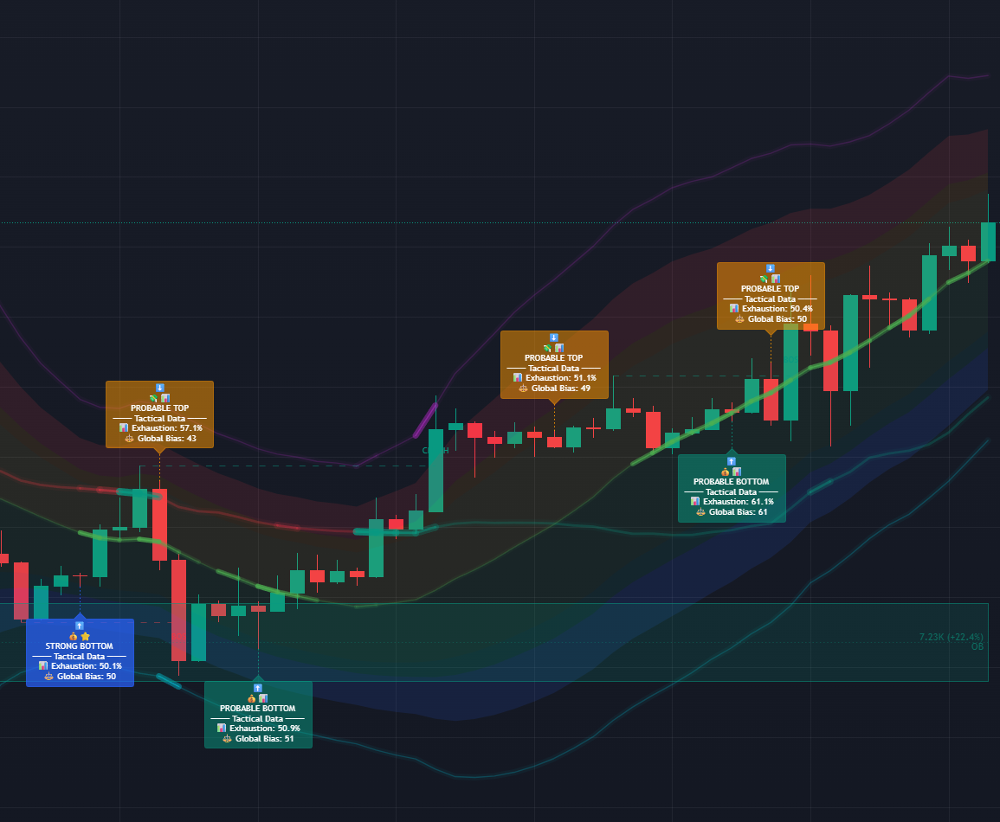
Implementação no TradingView
Instalação passo a passo, configuração do espaço de trabalho, o protocolo tático crítico Heikin Ashi e configuração de compatibilidade com o Plano Gratuito do TradingView.
O indicador opera perfeitamente em todos os níveis do TradingView: FREE, Basic, Essential, Plus e Premium. Ao consolidar toda a inteligência de mercado num único script de alta densidade, elimina-se a necessidade de múltiplos indicadores simultâneos.
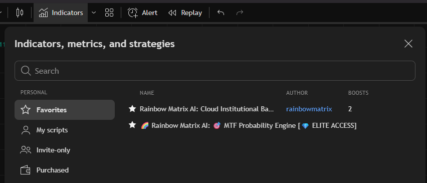
Para ocultar valores de input poluídos: clique com o botão direito no gráfico → "Settings" (Configurações) → separador "Status line" (Linha de status) → desmarque "Arguments" (Argumentos). O seu espaço de trabalho permanece limpo, focado e profissional.
- Tema Escuro (Dark Theme): O indicador foi projetado especificamente para o Dark Mode, onde os efeitos de brilho (glow) e as zonas térmicas destacam-se com o máximo impacto visual.
- Resolução: Mínimo 1920×1080 para operações em desktop, para aproveitar totalmente todos os elementos visuais do HUD tático.
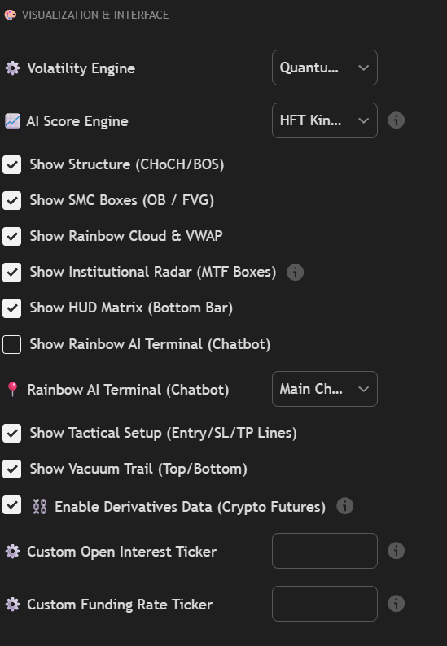
As velas tradicionais (Candlesticks) mostram a realidade crua do mercado. Mesmo numa tendência de alta clara, a alternância de velas verdes e vermelhas gera um senso de caos permanente para o trader iniciante — a ansiedade aumenta e impulsos emocionais sequestram a tomada de decisão racional.
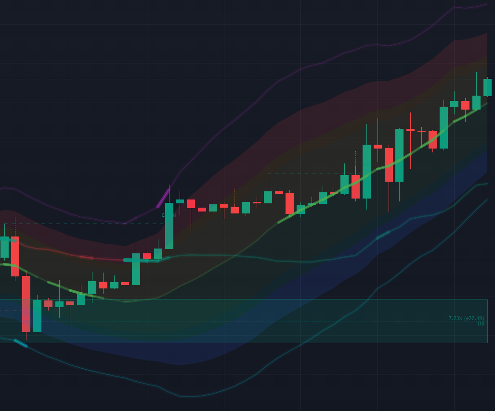
O Heikin Ashi calcula uma média da vela atual e da anterior, suavizando visualmente a ação do preço. O resultado: longas sequências da mesma cor, mesmo em mercados voláteis — tendências de alta como blocos verdes contínuos, tendências de baixa como blocos vermelhos sólidos.
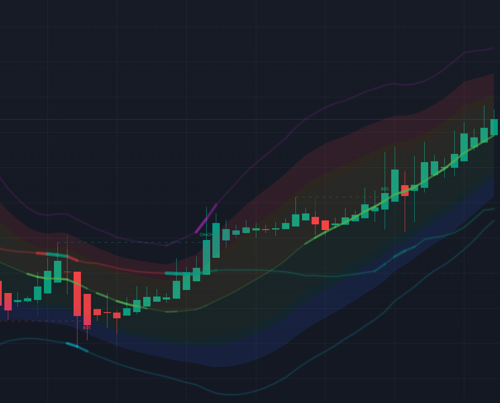
Heikin Ashi → Leitura macro da tendência e contexto.
Velas Tradicionais (Candlesticks) → Execução de precisão para entrada e saída.
Rainbow Matrix AI → Probability Score em tempo real.
Três confirmações complementares. Uma decisão de alta probabilidade.
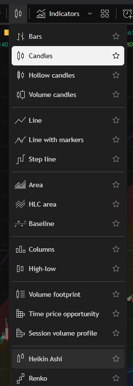
O Multi-Timeframe Probability Engine é totalmente compatível com o plano GRATUITO do TradingView. Um pequeno ajuste nas configurações do indicador desbloqueia 99% da inteligência institucional sem exigir nenhum upgrade de assinatura do TradingView.
O nível gratuito do TradingView não permite aos utilizadores digitar valores de timeframe personalizados diretamente (ex: 13m, 55m, 233m, 987m). Apenas os timeframes predefinidos são selecionáveis: 1m, 5m, 15m, 30m, 1h, 4h, 1D, 1W. Além disso, o ícone da antena de dados ao vivo apenas aparece nestes timeframes predefinidos — valores personalizados correm em dados históricos armazenados sem streaming em tempo real nas contas gratuitas.
| Slot | Valor | Função |
|---|---|---|
| TF1 | 5 min | Kinetic Trigger / Sniper |
| TF2 | 13 min | Filtro Intraday |
| TF3 | 55 min | Macro Tier I |
| TF4 | 233 min | Macro Tier II — Fibonacci front-run |
| TF5 | 987 min | Base Anchor |
Âncora intermédia: Protocolo 223m — vantagem assimétrica de 10 minutos contra ciclos HFT de 233m institucionais. Detalhes estratégicos completos no Capítulo 04.
| Slot | Valor | Equivalente Predefinido |
|---|---|---|
| TF1 | 5 | 5 min ✅ |
| TF2 | 15 | 15 min ✅ |
| TF3 | 60 | 1 hora ✅ |
| TF4 | 240 | 4 horas ✅ |
| TF5 | 1440 | 1 Dia ✅ |
Âncora intermédia com esta configuração: ~225m — funcionalmente equivalente ao Protocolo 223m padrão com apenas 1% de desvio. O ícone da antena de dados ao vivo é ativado e a geração completa de sinais em tempo real é preservada.
- Hierarquia de sinais completa SNIPER / EXTREMO / FORTE / PROVÁVEL
- HUD completo da MTF Probability Matrix
- Física Gravitacional MGI (muralhas institucionais)
- Smart Money Concepts — Order Blocks, Fair Value Gaps, CHoCH, BOS
- Resumo Tático IA com Entry / SL / TP
- Todas as 8 zonas térmicas da Rainbow Cloud
- Streaming de dados em tempo real (ícone da antena ao vivo ativo)
- Notificações push mobile
- Todos os 5 idiomas nativos do HUD
O exato Protocolo 223m — o front-running do ciclo HFT institucional de Fibonacci de 233 minutos em 10 minutos — requer o TradingView Premium para a capacidade de introduzir valores de timeframe personalizados diretamente. Este é o único recurso desbloqueado pela atualização do TradingView (independente da assinatura do Rainbow Matrix). Para a maioria dos operadores, a configuração Compatível com o Plano Gratuito entrega 99% da vantagem institucional.
O HUD Rainbow Cloud foi concebido exclusivamente para fundos de gráfico escuros. O modo claro "lava" as zonas térmicas, o brilho dos sinais e a hierarquia de cores — degradando a legibilidade dos sinais em aproximadamente 60%. Antes de ler qualquer sinal: Ícone da engrenagem no topo direito do TradingView → Chart Settings (Configurações do Gráfico) → Appearance (Aparência) → Background (Fundo) → Dark (Escuro).
Menu de Configuração
Todos os 15 parâmetros do Rainbow Matrix AI — do Motor de Volatilidade ao Motor de Sincronização MTF.
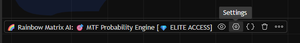
| Modo | Descrição | Melhor Para |
|---|---|---|
| Classic (StdDev) | Desvio Padrão académico tradicional. Confiável e estável. | Macro, mercados de movimento lento |
| Quantum HFT (GK+EWMA) | Funde Garman-Klass com RiskMetrics EWMA. A nuvem "respira" em tempo real. | Cripto, Índices ⭐ Recomendado |
O AI Score Engine é o algoritmo central que calcula o Global Probability Score — a métrica precisa entre 0% e 100% que quantifica a pressão direcional em todos os 5 timeframes simultaneamente.
Existe um fenômeno cinético que dita o comportamento do mercado algorítmico com consistência estrutural absoluta — um princípio que as massas do varejo nunca foram treinadas para auditar. Na física, quando uma massa de alta velocidade se desloca rapidamente, o vácuo resultante cria um vazio gravitacional que puxa violentamente o ambiente circundante de volta para estabilizá-lo. Nos mercados financeiros algorítmicos, o exato mesmo princípio aplica-se à ação de preço cinética.
O Vacuum Trail (Rastro de Vácuo) torna este fenômeno cinético inteiramente visível — um sistema de vetores geométricos convergentes implementados diretamente na consola do oscilador (não no gráfico principal de preços). Ele engaja no exato milissegundo em que o Global Score rompe os limites superiores ou inferiores do canal dinâmico.
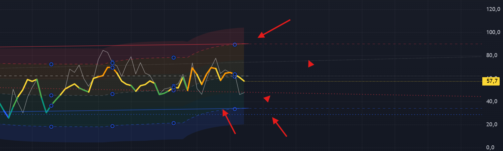
- Score severamente acima do canal: O fluxo do lado da compra está exausto. Um Vazio de Liquidez Institucional foi criado acima. A força algorítmica gravitacional puxa o score de volta para baixo. A Trilha Vermelha mapeia a trajetória antecipada.
- Score severamente abaixo do canal: O fluxo do lado da venda está exausto. Vácuo matemático abaixo do preço cinético. O vetor de reversão à média algorítmico é projetado para cima. A Trilha Verde mapeia a trajetória antecipada.
- Linha Central (Tracejada Branca): Ponto de Equilíbrio do Canal Dinâmico. O alvo primário de Take-Profit para a sequência de reversão à média — a primeira coordenada de desaceleração severa quando o score recua de uma anomalia extrema.
- Ghost Lines (Pontilhadas, estendendo-se à direita): Rastros de Vácuo (Vacuum Trails) históricos projetados horizontalmente como nós de referência quantitativa — mapeia os limites exatos onde o score sofreu exaustão cinética anterior.
Ele fornece não apenas um viés direcional, mas a exata coordenada de alvo algorítmico para a reversão. O trader de varejo vê que o score está extremo e opera cegamente contra a tendência. O operador de Elite vê a trajetória exata de reversão à média e a zona de desaceleração de alta probabilidade.
Para além da telemetria bruta do score, a arquitetura do Setup Tático do Rainbow Matrix AI comprime três sub-motores letais numa única camada de execução: o Filtro R:R Assimétrico, a Automação de Webhook JSON, e o marcador de Mudança de Direção Cinética.
Este é um dos motores mais letais e sofisticados dentro da arquitetura do Setup Tático — totalmente invisível para quem apenas olha para linhas num gráfico. Antes de renderizar as coordenadas finais de execução, o sistema calcula automaticamente a proporção R:R estrutural do setup e audita-a matematicamente em relação ao limite mínimo do operador.
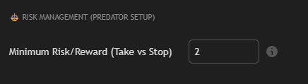
- Limite Mínimo R:R Padrão = 2.0: Por cada 1 unidade de risco cinético, o alvo deve extrair matematicamente um mínimo de 2 unidades de retorno.
- R:R Estrutural < 2.0 (Barreira Muito Perto): O motor contorna algoritmicamente a barreira rasa. Calcula o Take Profit = Entrada + (Risco × Limite Mínimo R:R). Projeta a extração para o nível compensatório matemático.
- R:R Estrutural ≥ 2.0: O motor respeita a barreira institucional natural — alvo de reversão à média de alta probabilidade preservado.
Para operadores quantitativos que implementam bots de execução automática, o motor do Setup Tático integra-se através de Webhooks JSON dinâmicos. Quando armado no painel de configuração — 🤖 AUTOMAÇÃO INSTITUCIONAL → Ativar Automação de Ordens (JSON) — no exato milissegundo em que um Protocolo Apex Strike é matematicamente validado, o motor transmite um pacote (payload) contendo as coordenadas de execução absolutas:
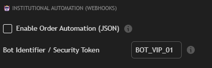
Sinaliza a coordenada exata onde o domínio cinético muda estruturalmente de Compradores para Vendedores (ou vice-versa). Isto não é um sinal de momentum — é a inversão matemática do vetor cinético dominante na resolução do fractal ativo.
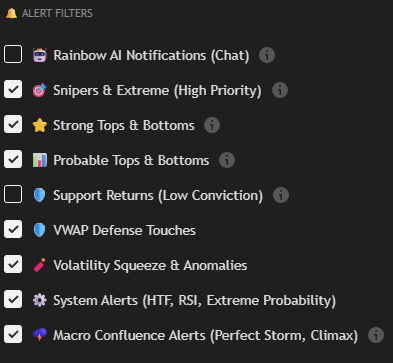
A Hierarquia de Sinais — da máxima letalidade aos pequenos alertas contextuais:
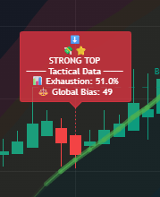
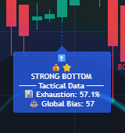
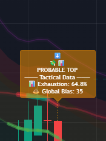
- Labels no Gráfico: ✅ LIGADO
- Labels no Oscilador: ❌ DESLIGADO
- Forte/Snipers: ✅ LIGADO
- Provável: ✅ (Com Cuidado)
- Suporte: ❌ DESLIGADO
- Labels no Gráfico: ✅ LIGADO
- Labels no Oscilador: ✅ LIGADO
- Forte/Snipers: ✅ LIGADO
- Provável: ✅ LIGADO
- Suporte: ❌ DESLIGADO
- Labels no Gráfico: ✅ LIGADO
- Labels no Oscilador: ✅ LIGADO
- Forte/Snipers: ✅ LIGADO
- Provável: ✅ LIGADO
- Suporte: ✅ LIGADO
Clique no ícone de Alerta 🔔 → "Create Alert" (Criar Alerta) → Condição: Any alert() function call (CRÍTICO — NÃO selecione condições de preço específicas) → Gatilho: Once Per Bar Close (Uma vez por Fechamento de Barra) → Arme as notificações (App + Email + Webhook) → Clique em "Create" (Criar).
| Alerta | Padrão | Diretriz |
|---|---|---|
| 🎯 Snipers & Extremos | ✅ LIGADO | NUNCA DESLIGAR. As janelas de execução mais raras e assimétricas. |
| ⭐ Reversões Estruturais Fortes | ✅ LIGADO | Manter Armado. Gatilho fundamental para setups de alta probabilidade. |
| 📊 Reversões Prováveis | ✅ LIGADO | Armar com expectativas calibradas. Radar de pré-aviso. |
| 🛡️ Mitigações de Suporte | ❌ DESLIGADO | Manter Desativado. Muito ruído, confiabilidade insignificante. |
| ⚓ Colisões com VWAP Macro | ✅ LIGADO | Manter Armado. Eventos massivos de liquidez institucional. |
| 🧨 Anomalias Kinetic Squeeze | ✅ LIGADO | NUNCA DESLIGAR. Os alertas sistêmicos mais urgentes. |
| ⚙️ Alertas Sistêmicos Macro | ✅ LIGADO | Manter Armado. Extremos estatísticos em todos os fractais. |
| 🌩️ Confluência Macro Absoluta | ✅ LIGADO | NUNCA DESLIGAR. Eventos raros que definem tendências. |
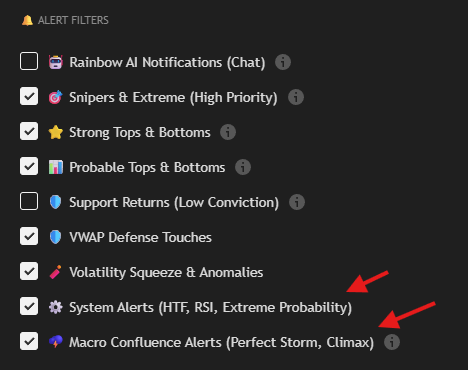
| Parâmetro | Padrão | Variação | Efeito |
|---|---|---|---|
| Raio Magnético (%) | 0.25% | 0.15% – 0.50% | Distância da muralha onde o MGI é ativado. Maior = mais antecipação. |
| Força Gravitacional | 6 | 3 – 10 | Pontos injetados no Score por muralha. Limite máximo: ±30 pontos no total. |
| Polaridade MGI | Magnético 🧲 | Magnético / Atrito | Magnético = protocolo stop-hunt (Cripto). Atrito = absorção (Forex/Ações). |
| Fractal | Padrão | Peso | Papel |
|---|---|---|---|
| TF1 — Gatilho Cinético | 5 minutos | 15% | O Sniper. Detecta o milissegundo exato para implantação de capital. |
| TF2 — Filtro Intraday | 13 minutos | 20% | O Líder de Esquadrão. Purga algoritmicamente falsos sinais do TF1. |
| TF3 — Macro Nível I | 55 minutos | 25% | O Comandante de Campo. Define a tendência estrutural intraday dominante. |
| TF4 — Macro Nível II | 233 minutos | 25% | O Comandante do Teatro de Operações. Posicionamento institucional de médio prazo. |
| TF5 — Âncora Base | 987 minutos | 15% | O Satélite. Contexto macro de longo prazo. Âncora que define as semanas. |
TF1 < TF2 < TF3 < TF4 < TF5 — A hierarquia cronológica ascendente é matematicamente obrigatória. Injetar timeframes fora de ordem quebrará estruturalmente o motor de sincronização e gerará telemetria criticamente corrompida.
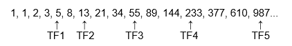
Assimetria Quantitativa: O Protocolo de Front-Running de 223 Minutos
Como antecipar matematicamente o relógio institucional HFT (Front-Run) em exatamente 10 minutos.
A manada do varejo executa universalmente sobre uma grelha temporal altamente previsível: 5m, 15m, 1H, 4H. Como essas coordenadas são padrão e globalmente populares, elas são as zonas exatas matematicamente segmentadas por motores de liquidez institucionais para engenheirar stop-hunts e armadilhas.
O capital institucional Tier-1 opera explicitamente no fractal temporal de 233 minutos — uma coordenada Fibonacci pura. É aqui que ordens de liquidez colossais são implementadas.
| Padrão do Varejo | HFT Institucional | Rainbow Matrix Elite |
|---|---|---|
| 4H (240 min) Vê o passado |
233 min (Fibonacci) Executa em massa |
223 min (Front-Running) 10 min de avanço |
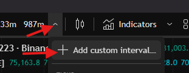
Acesse ao menu de resolução temporal ativo (ex: "1H") na barra de ferramentas primária do TradingView → Digite diretamente 223 no campo numérico de entrada → Selecione Minutos (Minutes) na lista suspensa → Pressione Enter.
Resultado: O seu terminal está agora algoritmicamente sincronizado para antecipar o relógio institucional (Front-Running).
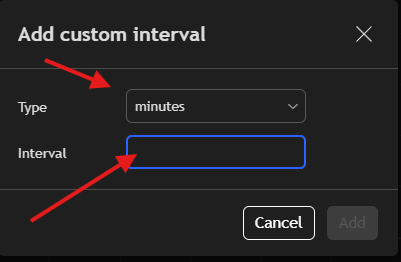
Ao ancorar o seu terminal à resolução de 223 minutos, a sua vela cinética fecha exatamente 10 minutos antes que o bloco massivo de algoritmos HFT de Fibonacci execute no limite de 233 minutos. Você deixa de reagir ao Smart Money — você o antecipa.
Arquitetura Multi-Fractal: A Assimetria Quantitativa
A matriz temporal de 5 dimensões e o Fractal Sintético Mestre — o Global Score.
Auditar um fractal temporal isolado é o equivalente tático a navegar num campo de batalha enquanto olha exclusivamente através de uma mira microscópica de atirador. Operadores de varejo presos no gráfico de 5 minutos são sistematicamente liquidados diariamente pelo vetor macro dominante de algoritmos de Higher Timeframes.
A cada milissegundo, em cada uma das 5 dimensões temporais, o sistema processa uma matriz de dados quantitativos pesada:
- Log-Normal Z-Score: Desvio cinético exato do preço relativo ao equilíbrio algorítmico, em desvios padrão terminais.
- VWAP Institucional & Volume Profile (POC/VAH/VAL): Nós estruturais precisos onde a liquidez institucional massiva foi absorvida ou implementada.
- RSI Cinético: Momentum algorítmico calibrado para cada horizonte temporal específico.
- SAR Adaptativo: Vetor direcional estrutural absoluto.
- Score Fractal: Síntese matemática de todos os dados quantitativos localizados dentro daquele nível (tier).
Para replicar fisicamente este nível de telemetria, um operador exigiria um conjunto de 5 monitores, rodando 10 indicadores distintos por tela, tentando calcular manualmente 50 variáveis independentes por milissegundo. O Rainbow Matrix AI comprime tudo isto numa única métrica absoluta de probabilidade matemática.
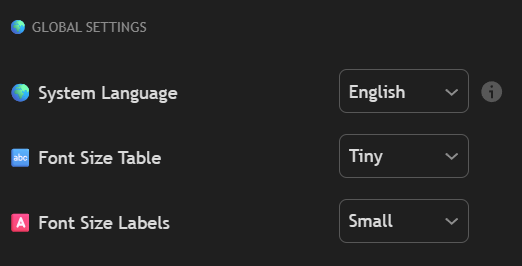
| 🇺🇸 English | 🇧🇷 Português | 🇪🇸 Español | 🇷🇺 Русский | 🇨🇳 中文 |
|---|---|---|---|---|
| Nativo | Nativo | Nativo | Nativo | Nativo |
A calibração linguística executa-se com latência absolutamente zero, não exigindo reinicialização do terminal ou atualização do feed de dados.
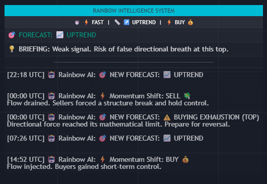
O Ecossistema Gravitacional: Rainbow Cloud & VWAPs Institucionais
Telemetria Óptica de Alta Fidelidade — zonas térmicas, desvio log-normal e fosforescência Black Swan.
Esta categoricamente não é uma Banda de Bollinger primitiva de varejo. É uma matriz de Desvio Padrão Log-Normal altamente avançada que gera limiares térmicos algorítmicos que mapeiam a probabilidade matemática exata de uma reversão estrutural com fidelidade estatística cirúrgica.
Quando o preço cinético rompe o 4º desvio padrão logarítmico (menos de 1% das vezes), dois resultados hiper-violentos são possíveis:
1. Reversão à Média Explosiva (Probabilidade Primária): O capital de Tier-1 usa o pânico como arma, engenhando uma acumulação agressiva de contra-vetor. O recuo (snapback) é instantâneo, assimétrico e altamente violento.
2. Evento de Liquidação em Cascata: O preço desafia temporariamente a gravidade — uma cascata de chamadas de margem (margin calls) destruindo sistematicamente operadores precipitados contra a tendência antes da reversão inevitável.
⚠️ Diretriz Absoluta: Nunca vá cegamente contra o vetor cinético neste limiar sem a autorização matemática absoluta do Synthetic Global Score.
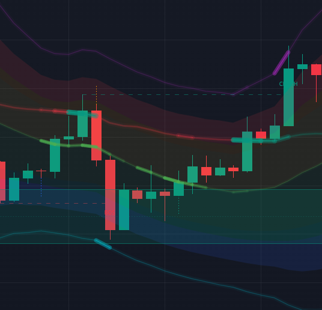
- VWAP Macro Dinâmica: Intensifica-se visualmente e "aquece" (glow) à medida que o preço cinético se aproxima. A proximidade espacial magnifica exponencialmente o clarão ótico.
- VWAP Diária (D): Reseta exatamente no início da sessão de 24H. Ímã principal para varreduras algorítmicas (sweeps) intraday.
- VWAP Semanal (W): Centro de gravidade absoluto para o capital de Tier-1. Um rompimento definitivo dita matematicamente uma mudança severa no regime macro.
- VWAP Mensal (M): A âncora institucional ápice. O cruzamento confirma que uma inversão de tendência massiva e multi-fractal está ativamente em andamento.
O Radar Institucional: MGI e Muralhas Algorítmicas de Liquidez
Muralhas de Volume Profile, física gravitacional do Smart Money, Order Blocks e Fair Value Gaps.
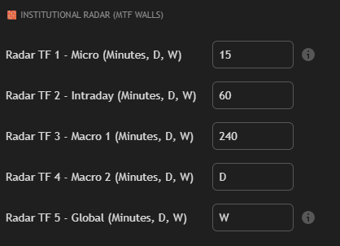
| Nível | Descrição | Comportamento |
|---|---|---|
| POC — Point of Control | Coordenada de maior densidade de volume. O absoluto centro de gravidade algorítmico. | O preço exibe tendência severa de reverter para o POC após desvios extremos. |
| VAH — Value Area High | Limite superior dos 70% do volume institucional aceito. | Vazios de liquidez "finos" acima do VAH — frequentemente ocorrem violentas rejeições algorítmicas. |
| VAL — Value Area Low | Limite inferior dos 70% da Value Area. | O preço é sistematicamente rejeitado e forçado de volta para dentro da matriz de volume aceito. |
| VWAP Histórica D/W/M | Ancoragens ponderadas por volume de longo prazo. | Densidade gravitacional estritamente proporcional à duração temporal (Mensal > Semanal > Diário). |
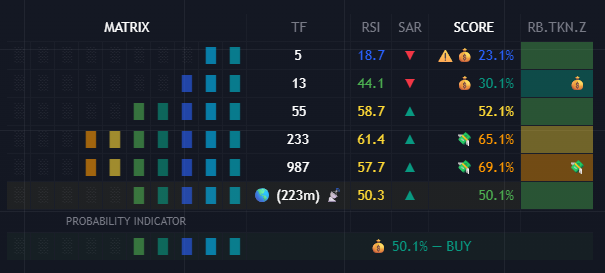
A muralha atua como uma barreira de absorção. O MGI desacelera o AI Score à medida que o preço se aproxima — antecipando precisamente que o momentum será absorvido e repelido.
📌 Forex · Ações · Índices
A muralha atua como um buraco negro. O MGI acelera agressivamente o vetor de probabilidade para o extremo — antecipando que os motores Tier-1 vão puxar o preço violentamente para liquidar os stops do varejo.
📌 Cripto Derivativos · BTC · Altcoins ⭐
- Order Blocks (OB): Estritamente validados por injeção de volume cinético anormal. Coordenadas localizadas onde os algoritmos de Tier-1 acumularam ordens de limite (limit orders) massivas. Alta probabilidade do preço reverter para estas zonas.
- Fair Value Gaps (FVG): Vazios estruturais translúcidos mapeando ineficiências de preço severas engenheiradas por agressivas ordens a mercado institucionais. O algoritmo antecipa que o preço eventualmente retornará para mitigar estas ineficiências.
Quando o Synthetic Global Score rompe um extremo absoluto (>90% de exaustão sistêmica) no exato milissegundo em que o preço cinético fisicamente mitiga um Order Block validado, o motor funde dinamicamente esses dois fluxos de dados e implanta um alerta de telemetria SNIPER — representando a máxima convergência quantitativa absoluta que se pode atingir dentro do sistema.
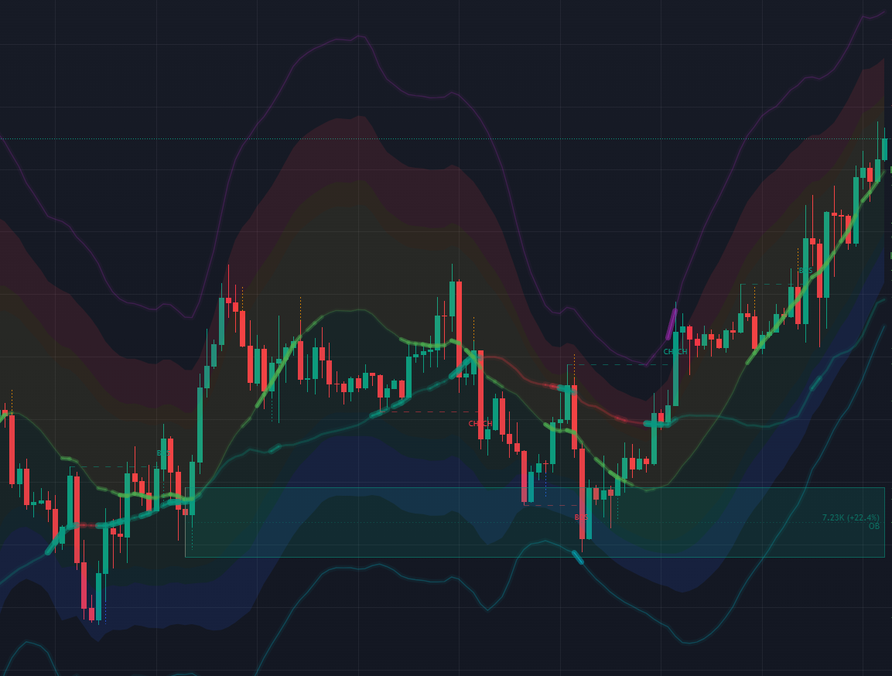
Existe uma dimensão oculta no campo de batalha algorítmico das criptomoedas que a grande maioria dos operadores de varejo ignora completamente — e que as baleias institucionais monitorizam de forma obsessiva. É a camada de telemetria de derivativos: Contratos Futuros Perpétuos, Open Interest (OI), e a Funding Rate (FR). Estes dados quantitativos revelam não apenas onde o preço cinético está atualmente, mas exatamente onde há muito capital pesadamente alavancado, e quão estatisticamente vulnerável está esse capital a varreduras de liquidez (liquidity sweeps) algorítmicas.
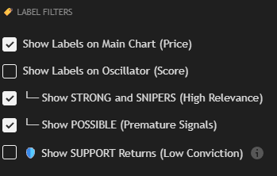
O Open Interest mede o volume total de contratos de derivativos ativos e não liquidados nativamente abertos no mercado. É a pegada matemática absoluta do capital alavancado.
- OI Subindo + Preço Subindo: Capital agressivo a entrar em posições Long. Momentum de alta suportado por volume cinético genuíno. Tendência de alta estruturalmente saudável.
- OI Caindo + Preço Subindo: Posições Short a serem fechadas forçadamente (short squeeze). O movimento carece de capital novo — alta probabilidade de exaustão iminente.
- OI Subindo + Preço Caindo: Capital agressivo a entrar em posições Short. Momentum de baixa confirmado.
- OI Caindo + Preço Caindo: Posições Long a serem liquidadas. O movimento carece de novos vendedores — momentum de baixa questionável.
A Funding Rate (Taxa de Financiamento) é o pagamento periódico trocado entre posições Long e Short perpétuas para manter o preço do contrato ancorado ao índice à vista (spot). É o custo assimétrico de manter a alavancagem — e revela o viés direcional dominante do capital alavancado.
- FR Extremamente Positiva: Longs estão a pagar pesadamente aos Shorts. Excesso de viés de alta — varejo alavancado preso do lado errado. Alta probabilidade de uma liquidação em cascata para baixo.
- FR Extremamente Negativa: Shorts estão a pagar pesadamente aos Longs. Excesso de viés de baixa — ignição perfeita para um rally de short-squeeze.
✅ ENGAJE (LIGUE) quando: executar Contratos Futuros Perpétuos de Criptomoedas em exchanges de Tier-1 (Binance, Bybit, OKX). O ticker ativo do gráfico deve ser um contrato perpétuo (ex: BTCUSDT.P, ETHUSDT.P).
❌ NÃO ENGAJE quando: operar Mercados Spot (À Vista), Forex, Ações Tradicionais, Índices ou Commodities. O ticker ativo tem de possuir telemetria Open Interest nativa.
Se ativado por engano num ativo não suportado, o protocolo do motor ignore_invalid_symbol=true suprime automaticamente o erro, permitindo que o indicador principal funcione ininterruptamente.
OI e FR são multiplicadores de risco-exposição — não são gatilhos isolados de compra/venda. Sempre confirme o viés direcional primeiro através da arquitetura Synthetic Global Score e do Tactical Setup. A telemetria de derivativos amplifica a confluência; não a substitui.
Engajamentos Táticos & Perguntas Frequentes (FAQ)
Respostas diretas às questões operacionais mais críticas de operadores de Elite verificados.
✅ Afirmativo. A arquitetura mestre comprime toda a sua matriz quantitativa num único script de execução. Você só precisa exclusivamente de uma conta básica e gratuita e autorização Elite ativa.
✅ Negativo. A Matrix é uma Arquitetura avançada de Telemetria Tática & Suporte à Decisão. Você, o operador tático, detém a absoluta autoridade executiva sobre a implantação de capital.
✅ Negativo. A física do order flow algorítmico e a variância log-normal são matematicamente universais. O motor é calibrado para Cripto, FX, Ações, Índices e Commodities.
✅ Negativo. Protocolo de Absoluto Zero-Repaint. Um gatilho é permanentemente renderizado estritamente no fechamento da vela. O que você audita em backtesting histórico é a exata e imutável realidade matemática que foi transmitida durante a execução ao vivo.
✅ O Fractal de 223 Minutos (Consulte o Capítulo 4). No entanto, o motor funciona com fidelidade máxima em qualquer resolução temporal.
✅ Aguarde a confirmação rigorosa de um Gatilho de Reversão Estrutural (Label Sniper / Strong). Execute imediatamente, ancorando o seu Stop-Loss atrás das coordenadas fornecidas pelo Tactical Setup. Nunca opere (fade) às cegas contra a tendência sem confirmação de telemetria estrutural.
✅ Afirmativo. O acesso Elite concede acesso simultâneo e livre em todos os ativos e fractais temporais.
✅ contact@rainbowmatrix.ai — estritamente reservado para operadores de Elite verificados.
Arquitetura de Preservação de Capital: A Regra Absoluta de Sobrevivência
A matemática da sobrevivência. A Diretriz Terminal de 1–2% que separa operadores de apostadores.
Um operador que arrisca 10% da sua banca por execução e depara-se com uma variância estatística padrão (5 drawdowns consecutivos — uma certeza matemática mesmo com a telemetria de topo) perde instantaneamente 41% de todo o seu terminal. Pelo contrário, um operador que rigidamente limita o risco a 1% por execução ao longo da mesma sequência exata de 5 drawdowns sofre um impacto financeiro insignificante de 5%.
Limite estritamente a exposição a um máximo de 1% da banca total por execução. Sem exceções.
Autorizado a uma exposição de banca de até 2%, restrito estritamente aos gatilhos primários confirmados STRONG ou SNIPER.
Nunca exceda 2% de risco do capital numa única execução, independentemente da convicção estrutural ou confluência.
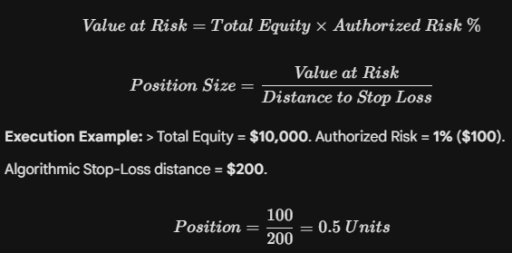
Consistência implacável na preservação de capital é a linha divisória absoluta entre operadores Tier-1 que extraem liquidez e operadores de varejo que servem de liquidez.
Diagnósticos do Sistema & Solução de Problemas Táticos
Resolva as anomalias sistémicas mais frequentes sem precisar acionar o suporte técnico.
- Auditoria de Expiração: Verifique se o webhook de telemetria não expirou. Os perfis gratuitos impõem uma expiração rigorosa de 30 dias.
- Auditoria de Condição: Garanta que a condição de disparo está estritamente definida para Any alert() function call.
- Auditoria Mobile: iOS/Android Settings (Configurações) → Notificações → TradingView → garanta que a telemetria push está autorizada.
- Reset Sistêmico: Elimine totalmente o alerta (hook) corrompido e re-inicialize seguindo o protocolo do Capítulo 3.
- Auditoria de Parâmetro: Verifique se a diretriz Show Rainbow AI Terminal está marcada ativamente nas configurações.
- Auditoria de Posicionamento: Verifique se o ponto de ancoragem (anchor point) do terminal está corretamente atribuído ao Gráfico Principal (Main Chart) ou Painel do Oscilador.
- Conflito de Z-Index: Altere a posição da janela do Terminal para um setor limpo da tela.
- Browser: Utilize arquitetura baseada em Chromium atualizada (Chrome, Brave, Edge). O Firefox não está otimizado para renderização pesada de PineScript.
- Recurso: Desative temporariamente o Show Institutional Radar e o Show SMC Boxes — são os processadores gráficos mais pesados.
- Dados: Clique com o botão direito no gráfico → Chart Settings (Configurações do Gráfico) → Data (Dados) → restrinja a quantidade de barras históricas a serem carregadas.
- O Setup Tático exige 4 condições matemáticas simultâneas. A restrição mais comum: O Global Score estava abaixo de 70% no momento do sinal — o layout é bloqueado de forma intencional para sinais de baixa probabilidade.
- Um Volatility Squeeze (Compressão de Volatilidade) pode estar ativo. O motor recusa renderizar linhas táticas dentro de zonas de liquidez comprimida.
- Confirme que "Show Tactical Setup" (Exibir Setup Tático) está ativamente autorizado nas configurações do indicador.
- Verifique o status ativo da sua assinatura diretamente em rainbowmatrix.ai.
- Garanta que o seu ID exato do TradingView está registado corretamente no portal. Os tokens de acesso estão vinculados aos Nomes de Utilizador do TradingView, não aos endereços de e-mail.
- Transmita o seu nome de usuário exato do TradingView e o log do erro para contact@rainbowmatrix.ai para resolução manual da engenharia.
Avisos de Risco Sistêmico & Diretrizes Legais Absolutas
Diretriz estatística de risco obrigatória e restrições de propriedade intelectual sobre a arquitetura.
O Rainbow Matrix AI é uma arquitetura de telemetria quantitativa altamente avançada e de deteção de anomalias log-normais. Quaisquer métricas de "Acerto Histórico" renderizadas no Master HUD audita a variância cinética passada matematicamente através do cálculo da amplitude ATR. Estes dados quantitativos estritamente NÃO constituem aconselhamento financeiro, recomendações de investimento ou qualquer garantia matemática de resultados cinéticos futuros.
O campo de batalha algorítmico é hiper-letal e carrega riscos severos e sempre presentes de liquidação total de capital. A execução tática é responsabilidade única e absoluta do operador.
A execução física das coordenadas algorítmicas de Stop-Loss calculadas pelo Setup Tático da Matrix é um requisito arquitetônico rígido e inegociável. Desconsiderar estes níveis de invalidação matemática viola a filosofia quantitativa central do motor, baixando instantaneamente a sua operação da execução tática Tier-1 para os apostadores amadores (retail gambling).
Este manual tático e as estruturas matemáticas por trás dele são fortemente confidenciais, destinados exclusivamente à aplicação por operadores Elite confirmados e verificados do Rainbow Matrix AI. Toda a arquitetura proprietária, metodologias quantitativas e inteligência estrutural aqui contidas são rigorosamente protegidas pelas leis internacionais de propriedade intelectual. Cópia não autorizada, engenharia reversa ou distribuição não autorizada é rigidamente proibida e resultará em bloqueio algorítmico sumário e imediata intervenção legal.
🌐 rainbowmatrix.ai · ✉️ contact@rainbowmatrix.ai
© Rainbow Matrix AI · Todos os direitos reservados · Documento Confidencial para Membros Elite